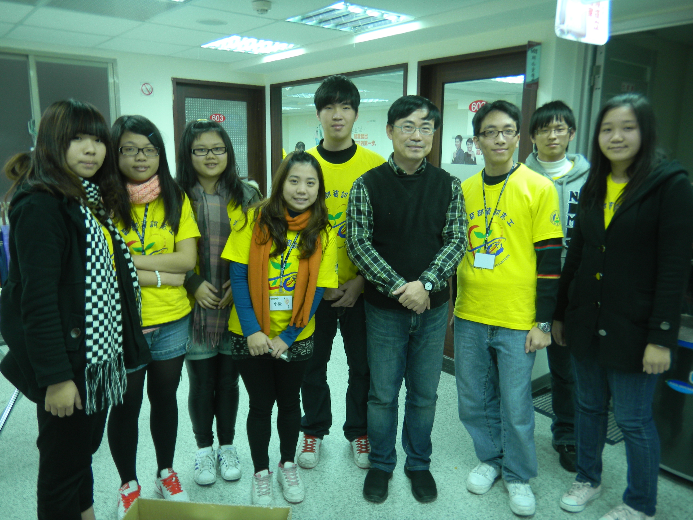

感謝您對「自由軟體鑄造場」的支持與愛護，十多年來「自由軟體鑄造場」受中央研究院支持，並在資訊科學研究所以及資訊科技創新研究中心執行，現已完成階段性的任務。 原網站預計持續維運至 2021年底，網站內容基本上不會再更動。本網站由 Denny Huang 備份封存。
也紀念我們永遠的朋友 李士傑先生（Shih-Chieh Ilya Li）。
也紀念我們永遠的朋友 李士傑先生（Shih-Chieh Ilya Li）。
真理大學 -- 將自由軟體融入資訊志工活動
Created at Wednesday, 09 February 2011 19:45 Last Updated on Thursday, 24 February 2011 03:00
近年來教育部大力推動資訊志工計劃，致力於縮減偏鄉地區與都市間的數位落差。但由於偏鄉地區資源較為有限，學校若選擇商業軟體進行教學，當認真學習的學生們回到家想複習上課所學的電腦軟體時，常常因為需要負擔另一筆額外的花費來購買所需軟體，造成學生經濟上的壓力，而在學習上望而卻步。帶領真理大學學生從事資訊志工服務的紀宗衡老師（以下簡稱紀老師）發現這個問題後，希望透過自己平時使用的自由軟體，能夠解決學生們學習上的困難，因此決定將自由軟體融入資訊志工服務的範疇，藉由自由軟體來解決偏鄉地區數位落差的問題。
紀老師成立真理大學志工聯隊至今已有兩年半的時間，初期紀老師曾提出運用自由軟體來協助志工服務的想法，但由於學生們普遍對於自由軟體仍存有許多疑慮，因而作罷。另一次的契機於去年（2010）的暑假，紀老師赴越南服務，當次的志工服務經驗，讓紀老師決心將自由軟體應用教學融入志工服務當中。
紀老師回憶道，由於越南當地硬體設備老舊，也沒有足夠的經費更新軟體，更遑論善用資訊提升行政效率與教學成效。服務的當下也只能利用較為不正當的方式，為其既有的商業軟體做更新，才能暫時消弭資訊環境上的斷層，在當地進行電腦教學的課程。面對這種情況，身為老師的他心裡一直覺得不踏實，因此歸國後便下定決心改變這一切，他開始鼓勵學生嘗試使用自由軟體來進行志工服務，並且安排一場資訊志工自由軟體培訓課程。
去年底，紀老師鼓勵參與志工的同學先以自學的方式接觸自由軟體，並在網路上找尋適合服務對象的自由軟體種類，將它運用在偏鄉教學上，幫助石門國中、石門國小電腦社的小朋友們上電腦課。藉由自由軟體的課程讓偏鄉的小朋友有更多豐富的軟體資源可以使用，並且在回家後也能自行下載自由軟體來練習，家長無需額外負擔購買軟體的費用。自由軟體不僅是幫助偏鄉地區的小朋友們，同時也打開資管系學生的視野，了解網路上其實有很多人願意貢獻自己製作的軟體供大家自由運用，體會到自由軟體的好處及其存在的價值。

▲ 圖中前排右起第三位為紀老師。
2010 年 12 月，真理大學與亞太創意技術學院兩校，總計七個資訊志工團隊，共同舉辦一場自由軟體志工培訓的活動，介紹自由軟體的理念、優點和常用的自由軟體，讓學生了解自由軟體的操作模式，並將其實際運用在偏鄉教學中，解決盜版和偏鄉教育資源不足的問題。訪問中，一位真理大學同學提到：「許多人提倡反盜版，卻忘了告訴大家有自由軟體這個解決盜版問題的好方法。」
紀老師認為，人本來生下來就是什麼都沒有，所有的資源與知識都是大家共同累積並且共同享有的，因此很贊同自由軟體的分享精神。不論是接受服務的小朋友或是熱心擔任志工的大學生，都能透過自由軟體來打開視野，學習到自由軟體開放、分享的精神。
真理大學資訊志工服務活動剪影：https://ipicbox.tw/album.php?a=dCfTPTIZNlV=
Special


Open Source Software Foundry‧ Best Viewed with IE7.0 or Firefox2.0 above, 1024x768 Resolution. E-Mail：contact@openfoundry.org
Address：No.128, Sec.2, Academia Rd., Institute of Information Science, Academia Sinica, Nangang District, Taipei City 11529, Taiwan (R.O.C).
Privacy Policy. Terms-of-use
Address：No.128, Sec.2, Academia Rd., Institute of Information Science, Academia Sinica, Nangang District, Taipei City 11529, Taiwan (R.O.C).
Privacy Policy. Terms-of-use